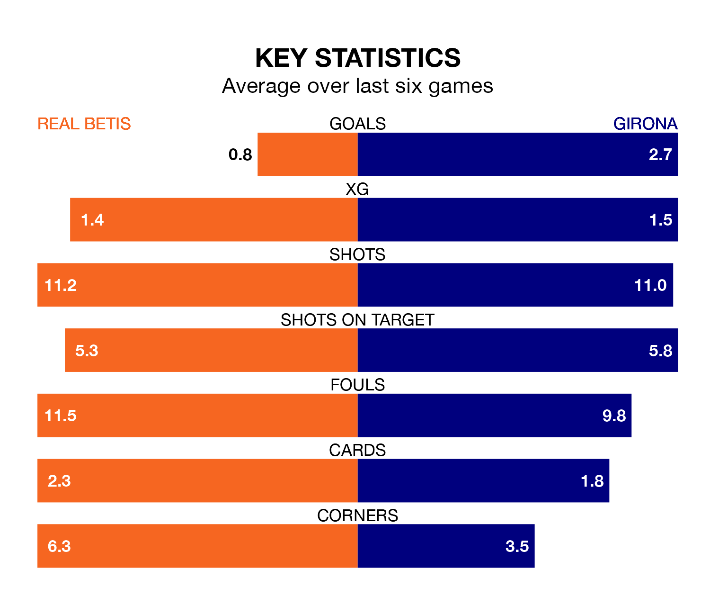

Girona face a challenge to maintain their high-scoring form away against a tight Real Betis defence on Thursday.
With 41 goals in 17 games, Girona are the top scorers in La Liga ahead of the 6pm kick-off at the Estadio Benito Villamarín.
They face a Real Betis side who have scored 19 in 17 matches, but conceded only 17 goals, putting them fourth among the league's tightest defences – only Real Madrid, Atlético Madrid and UD Las Palmas have conceded fewer goals.
Girona are top of the table after 17 games, of which they have won 14 and drawn two, earning 44 points.
Betis are six places behind the visitors in seventh, with six wins and nine draws putting them on 27 points.
In Artem Dovbyk, Girona have one of the league's most on-form strikers so far this season. He has notched 10 goals in 16 appearances, to sit second in the scoring charts.
His goal rate of one every 98 minutes is quicker than that of Willian José, Real Betis's top scorer with a goal every 139 minutes, and a total of six goals in 14 games.
The home side are in mixed form in La Liga, with two wins and four draws from their last six games.
With five wins and a draw over that period, Girona's form is much better – they have taken 16 points from 18, compared to Betis's 10.
In the last 10 years, Betis and Girona have played each other on eight occasions. Betis won seven of them and they drew once.
On average, Real Betis scored 2.0 goals and Girona 1.0 in those matches.
Their last meeting was on May 28, when Betis won 2-1 away.
Betis's last match was on Sunday, a 0-0 draw against Real Sociedad.
Girona beat Deportivo Alavés 3-0 last time out, on Monday, with Dovbyk (two) and Cristian Portugués on the scoresheet.
Thursday's match will be refereed by Ricardo De Burgos Bengoetxea, who has taken charge of eight La Liga games so far this season, issuing two red cards and booking 33 players. He has not awarded any penalties.
The last Betis game De Burgos Bengoetxea refereed was a 3-0 home win against Valencia CF on October 1. He is yet to oversee a match featuring Girona this season.
